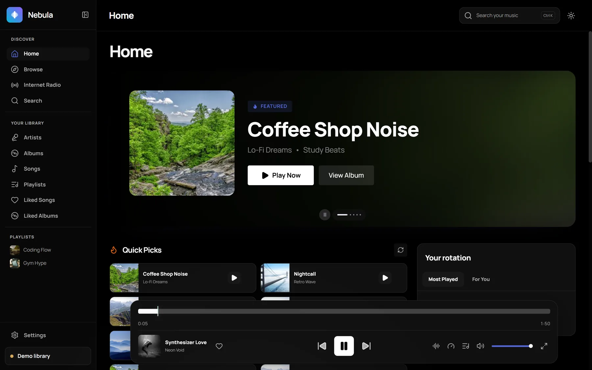
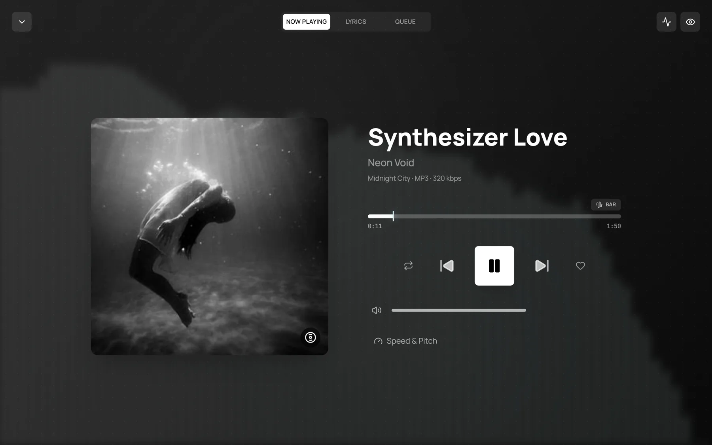
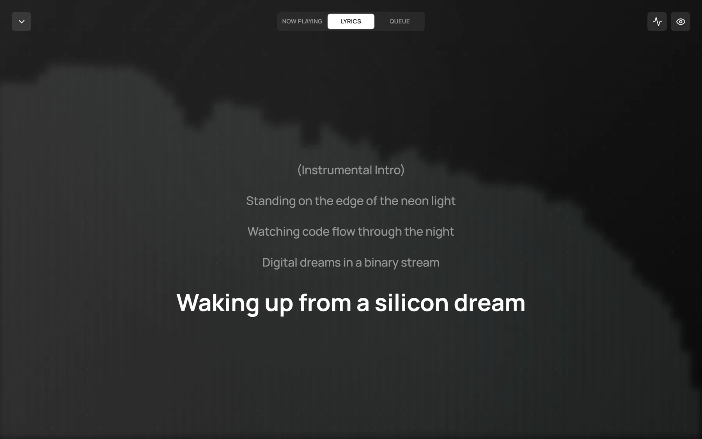
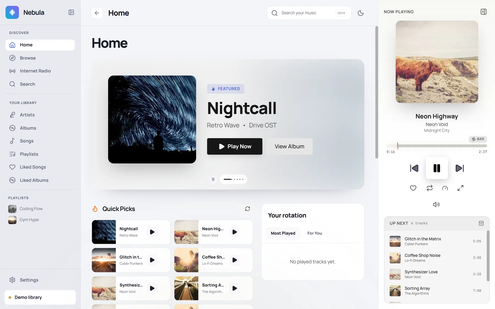

Windows
Windows 10 22H2 or 11 · x64
Tray, media keys, mini-player and AI DJ.
A music player for Navidrome, Gonic, Airsonic and other Subsonic servers. Use it in your browser or on Windows and macOS.

Nebula connects straight to your server. No account, no tracking.

Artwork, controls and visualizers in one focused view.

Synced lyrics from your server, with fallback providers when it has none.

Everything in the web player, plus:
Windows 10 22H2 or 11 · x64
Tray, media keys, mini-player and AI DJ.
Apple Silicon (M1 and later)
Menu-bar controls, Now Playing and mini-player.
Any modern browser
Nothing to install. Works on any device.
Windows: if SmartScreen appears, choose More info → Run anyway.
macOS: if the app is blocked, go to System Settings → Privacy & Security → Open Anyway.
Use docker run or Compose.
Go to http://localhost:8080.
Enter your server URL and sign in. The server needs HTTPS and CORS enabled.
Pull the latest image and restart the container.
docker pull lilremark/nebula-music:latest
docker run -d \
--name nebula-music \
--restart unless-stopped \
--read-only \
--tmpfs /tmp:rw,noexec,nosuid,size=16m \
--security-opt no-new-privileges \
--cap-drop ALL \
-p 8080:8080 \
lilremark/nebula-music:latest# docker-compose.yml
services:
nebula-music:
image: lilremark/nebula-music:${NEBULA_VERSION:-latest}
pull_policy: always
restart: unless-stopped
ports:
- "${NEBULA_PORT:-8080}:8080"
read_only: true
tmpfs:
- /tmp:rw,noexec,nosuid,size=16m
security_opt:
- no-new-privileges:true
cap_drop:
- ALL
healthcheck:
test: ["CMD", "wget", "-q", "--spider", "http://127.0.0.1:8080/healthz"]
interval: 30s
timeout: 3s
start_period: 10s
retries: 3More options in the Docker guide.
Connect your server, or explore the demo library.